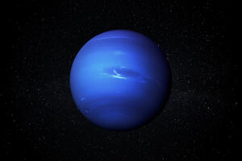

Neptun

- Neptún je zunanji, po oddaljenosti od Sonca osmi planet v Osončju
- Astronomske skice Galileo Galilea kažejo, da je on prvi opazoval Neptun,
- Ker je Neptun od Sonca zelo oddaljen, prejme zelo malo toplote. Temperatura najvišjih plasti ozračja znaša le -218 °C
- Neptunovo ozračje ima najhitrejše vetrove v Osončju, in sicer hitrosti do 2000 km/h
- Na podlagi primerjave magnetnih polj obeh planetov so znanstveniki mnenja, da je tako nenavadna orientacija značilna za tokove v notranjosti planeta.
- Prvi dokazi o nezaključenosti obročev so se pojavili v sredini 80.
- Do leta 2005 sta bila znana dva Neptunova Trojanska asteroida, ki imata enako tirno periodo kot planet.